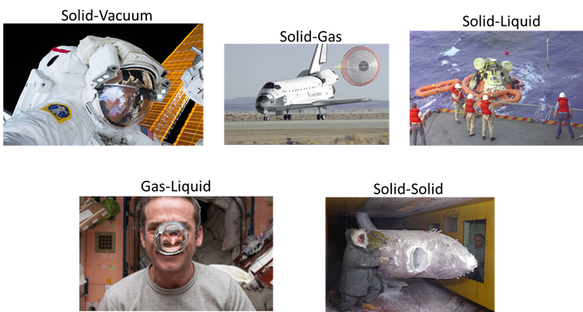
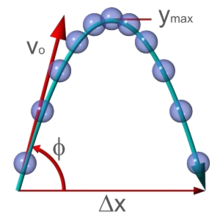
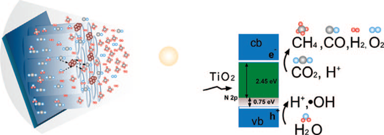
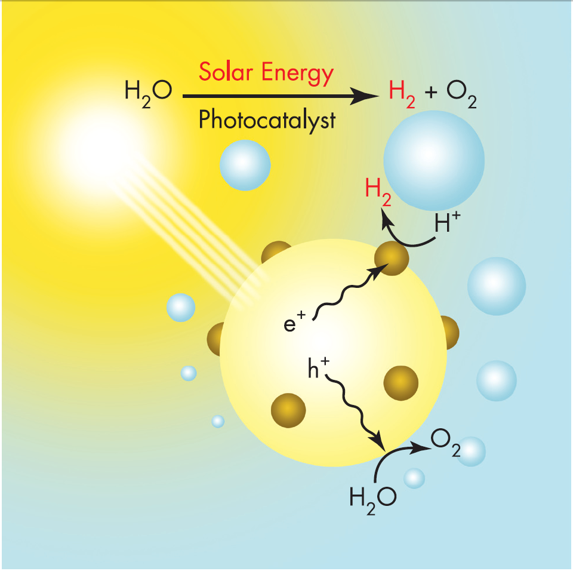

CP535/970: Molecular and interfacial science
Module overview
L Lue
Department of Chemical and Process Engineering
University of Strathclyde
Overview
- Module leader: Leo Lue
- Demonstrator: Chris Boyle
- Lectures / Q&A sessions:
- Tuesday 15.00–16.00 (weeks 1–10)
- Friday 11.00–12.00 (weeks 1–10)
- Tutorials: Tuesday 16.00–17.00 (weeks 1–10)
- Module review:
- Tuesday 15.00-17.00 (week 11)
- Friday 11.00–12.00 (week 11)
Components of assessment
| component | weight | format | time |
|---|---|---|---|
| final exam | 70% | 2 hours | December exam |
| coursework 1 | 15% | peer assessment (80%/20%) | week 5 |
| coursework 2 | 15% | peer assessment (80%/20%) | week 10 |
Coursework
- Submitted to Myplace at the end of week 5 and the end of week 10
- Peer assessed: Need to mark 3 other assignments within one week of the submission date
- Can work with other students in groups.
- Tutorial sessions should be used to ask questions.
- Exam questions will be of a similar style and level of difficulty.
Review materials
- CP203: Thermodynamics and Chemical Principles
- intermolecular forces
- thermodynamics / combined first and second laws
- electron / energy levels
- CP204: Fluid Flow and Heat Transfer
- mechanics: force, momentum
- differential balances
- CP207: Process Analysis and Statistics
- probability distributions / mean / expectation value
- correlations / standard deviation
- MM211: Mathematics 3B
- calculus
- differential equations
Chemical engineering at alternate scales
Digital microfluidics
Lenses

Displays: e-ink


Photovoltaics


Energy harvesting

Surface characterization techniques
Example: Scanning Tunneling Microscopy (STM): Based on quantum tunneling effect, has atomic resolution, and is used to manipulate atoms.


Reactions for an individual molecule


Triggering and observing reactions on a single molecule
A boy and his atom - movie
ripples explanation
Module overview
- Week 1: Surfaces and interfaces
- Week 2: Solid interfaces
- Week 3: Microscopic dynamics
- Week 4: Statistical mechanics
- Week 5: Ideal gases and kinetic theory
- Week 6: Adsorption
- Week 7: Quantum systems
- Week 8: Electronic properties of materials
- Week 9: Electronic devices
- Week 10: Catalysis
- Week 11: Module review
Surfaces and interfaces

Properties of surfaces and nanofabrication
Water repellent and self-cleaning surfaces (windows, solar panels), anti-icing, anti bio-fouling (marine, biomedical), corrosion resistant, electronics and energy harvesting materials.

Microscopic dynamics


Statistical mechanics


Electronic properties of materials


Electronic devices


Catalysis


Summary
- CP535 is a 10-credit module
- time requirement: 100 hours
- 30 contact hours
- 70 hours of self-study
- private study
- revision
- coursework
Questions?
If you have any questions, please post to the class forum on Myplace or email me at leo.lue@strath.ac.uk.